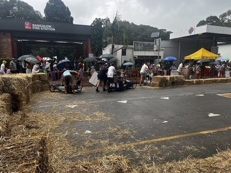
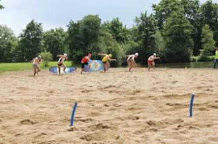

Build a gravity-powered cart, choose wheels and steering, then race it down a hill against others.
Heritage note
Part of the living heritage of Australia.
Origins
Usually placed in the era of Age of Contact and Craft (about 1500 to 1800), although its exact origins are uncertain, within the cultural world of Pacific and Oceania.
Sources
Related entries

Beach flags
Australia · RacingTwo-up
Australia · Board and table gamesPasifika kirikiti
New Zealand · Street and playground gamesSamoan cricket
Samoa · Street and playground gamesTongan cricket
Tonga · Street and playground gamesFuu Fuu Penu
Tuvalu · Street and playground games